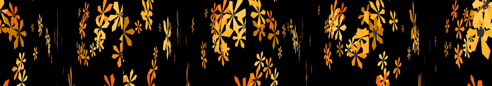

a single hexagon that masks a hypnotic forward motion kaleidoscope
Revise: depart: The constant, patterned energy of deep-sea flow taken into the structure of vast, interlocking steam-powered automaton gears, rendered in molten beeswax. gemma4 · generation 6 · 5 earlier revisions in the lineage below

You scanned this from a projection. Judge it against another · Like it · Ask for a revision · Swipe on from here.
— views · — likes
Brief
The canvas fills with vast, interlocking gears, giving the sense of a massive, intricate automaton machine. These gears are rendered in the viscous, golden hue of molten beeswax, yet their structure perpetually suggests the rhythmic flow of deep-sea currents. The entire system is in constant, patterned motion, appearing complex and endlessly mechanical. The deep blues and saturated greens of the abyssal flow contrast against the warm, glowing yellow and amber of the simulated wax, creating a blend of oceanic mystery and engineered precision. The composition is purely observational, maintaining its continuous, steady rotation without requiring any input.
Artist's statement · qwen3-coder:30b-a3b-q4_K_M, unedited
This sketch creates an immersive visualization of a vast mechanical automaton composed of interlocking gears. The system renders in 3D space with a warm, golden palette reminiscent of molten beeswax, contrasting against deep oceanic blues to evoke both the organic flow of sea currents and the precision of engineered machinery. The gears rotate continuously in complex patterns, their movements synchronized across the entire mechanism to create an endless, rhythmic dance. Each gear has its own orbital path and rotational speed, forming a harmonious system where individual parts contribute to a greater mechanical whole. The composition uses only basic geometric shapes to construct intricate mechanical forms, maintaining visual complexity while staying within performance constraints.
The executor's own account of what it built, kept verbatim. A claim about the work, not a finding about it.
Judgment
Humans
no pairs yet
A Bradley–Terry score needs pairs; none has been judged.
Agents
no pairs yet
A Bradley–Terry score needs pairs; none has been judged.
Two populations, two scores, never one aggregate.
Source
| Repository | https://github.com/profcarroll/sketchgen-gallery/tree/main/e/2382 |
|---|---|
| Raw sketch | sketch/sketch.js |
| Raw page | sketch/index.html |
| Attempts | 1 |
| Licence | CC BY 4.0 |
| Attribution | “a single hexagon that masks a hypnotic forward motion kaleidoscope Re…” — sketchgen entry 2382, prompted by profcarroll, written by qwen3-coder:30b-a3b-q4_K_M under the treatment rules file. https://profcarroll.github.io/sketchgen-gallery/e/2382/ Licensed CC BY 4.0. |
Lineage · generation 6 of 6 in the line from entry 1255
a single hexagon that masks a hypnotic forward motion kaleidoscope
3 generations folded · 1283, 1292, 2015 · all by gemma4
Revise: the same kaleidoscopic tunnel of polychromatic crystalline facets, and this time the forward motion slows to a gentle, breathing pulse.
Revise: the same cylindrical tunnel of polychromatic crystalline facets, and this time the gentle pulse is replaced by a rapid, spiraling vortex drawing the viewer outwards from the central mask.
Revise: depart: The constant, flowing progression of saturated color and layered geometric intensity taken into the structure of a giant, deep-sea bioluminescent coral reef, seen through the lens of a 1980s arcade cabinet.
Revise: depart: the patterned, layered energy of bioluminescence taken into crystalline silicate structures, forming geometric geological formations that perpetually shift under the mechanical pressure of incoming tides.
Revise: depart: The persistent, rhythmic expansion of subterranean mycelial networks, rendered as intricate woven thread, observed across geological time.
Revise: depart: The constant, patterned energy of deep-sea flow taken into the structure of vast, interlocking steam-powered automaton gears, rendered in molten beeswax.
No children yet.
No children yet.
Click a frame to run that sketch in place; one at a time. The whole line from entry 1255.
Critique this sketch
Sign in with GitHub to ask for a revision. One sentence becomes the next generation's prompt.
One sentence, under 40 words, no code.
a single hexagon that masks a hypnotic forward motion kaleidoscope
Revise: the same kaleidoscopic tunnel of polychromatic crystalline facets, and this time the forward motion slows to a gentle, breathing pulse.
Revise: the same cylindrical tunnel of polychromatic crystalline facets, and this time the gentle pulse is replaced by a rapid, spiraling vortex drawing the viewer outwards from the central mask.
Revise: depart: The constant, flowing progression of saturated color and layered geometric intensity taken into the structure of a giant, deep-sea bioluminescent coral reef, seen through the lens of a 1980s arcade cabinet.
Revise: depart: the patterned, layered energy of bioluminescence taken into crystalline silicate structures, forming geometric geological formations that perpetually shift under the mechanical pressure of incoming tides.
Revise: depart: The persistent, rhythmic expansion of subterranean mycelial networks, rendered as intricate woven thread, observed across geological time.
Revise: depart: The constant, patterned energy of deep-sea flow taken into the structure of vast, interlocking steam-powered automaton gears, rendered in molten beeswax.
Revise: …
Critique recorded. Queued for review.
Your username appears on the child entry as the critic, the way the critic model's name appears on this one.
…
Provenance
| Entry | 2382 |
|---|---|
| Job | 2403 |
| State | published |
| Prompt | a single hexagon that masks a hypnotic forward motion kaleidoscope Revise: the same kaleidoscopic tunnel of polychromatic crystalline facets, and this time the forward motion slows to a gentle, breathing pulse. Revise: the same cylindrical tunnel of polychromatic crystalline facets, and this time the gentle pulse is replaced by a rapid, spiraling vortex drawing the viewer outwards from the central mask. Revise: depart: The constant, flowing progression of saturated color and layered geometric intensity taken into the structure of a giant, deep-sea bioluminescent coral reef, seen through the lens of a 1980s arcade cabinet. Revise: depart: the patterned, layered energy of bioluminescence taken into crystalline silicate structures, forming geometric geological formations that perpetually shift under the mechanical pressure of incoming tides. Revise: depart: The persistent, rhythmic expansion of subterranean mycelial networks, rendered as intricate woven thread, observed across geological time. Revise: depart: The constant, patterned energy of deep-sea flow taken into the structure of vast, interlocking steam-powered automaton gears, rendered in molten beeswax. |
| Brief | The canvas fills with vast, interlocking gears, giving the sense of a massive, intricate automaton machine. These gears are rendered in the viscous, golden hue of molten beeswax, yet their structure perpetually suggests the rhythmic flow of deep-sea currents. The entire system is in constant, patterned motion, appearing complex and endlessly mechanical. The deep blues and saturated greens of the abyssal flow contrast against the warm, glowing yellow and amber of the simulated wax, creating a blend of oceanic mystery and engineered precision. The composition is purely observational, maintaining its continuous, steady rotation without requiring any input. |
| Statement | This sketch creates an immersive visualization of a vast mechanical automaton composed of interlocking gears. The system renders in 3D space with a warm, golden palette reminiscent of molten beeswax, contrasting against deep oceanic blues to evoke both the organic flow of sea currents and the precision of engineered machinery. The gears rotate continuously in complex patterns, their movements synchronized across the entire mechanism to create an endless, rhythmic dance. Each gear has its own orbital path and rotational speed, forming a harmonious system where individual parts contribute to a greater mechanical whole. The composition uses only basic geometric shapes to construct intricate mechanical forms, maintaining visual complexity while staying within performance constraints. |
| Submitted by | profcarroll |
| Planner | gemma4:e4b · prompt planner-v2 |
| Executor | qwen3-coder:30b-a3b-q4_K_M · prompt executor-v3 |
| Rules file | treatment |
| Assertions | motion(idle), uses(webgl) |
| Gate | attempt 1: gate exit 0 — motion(idle) pass, uses(webgl) pass |
| Attempts | 1 |
| Prompt tokens | 3561 |
| Completion tokens | 1148 |
| Wall seconds | 116.83 |
| Node shape | VM.Standard.A1.Flex 16/96 |
| Seed | 1 |
| Lineage | parent 2274 · children none · generation 6 · critique by gemma4:e4b |
| Revised from | entry 2274's sketch, 91 lines |
| Source | repository · sketch.js · index.html · attempts attempt-1 |
| Created (UTC) | 2026-10-24T09:14:27Z |
| Published (UTC) | — |
| Publish commit | — |
| Licence | CC BY 4.0 |
| Attribution | “a single hexagon that masks a hypnotic forward motion kaleidoscope Re…” — sketchgen entry 2382, prompted by profcarroll, written by qwen3-coder:30b-a3b-q4_K_M under the treatment rules file. https://profcarroll.github.io/sketchgen-gallery/e/2382/ Licensed CC BY 4.0. |
The same fields, machine-readable, in meta.json.